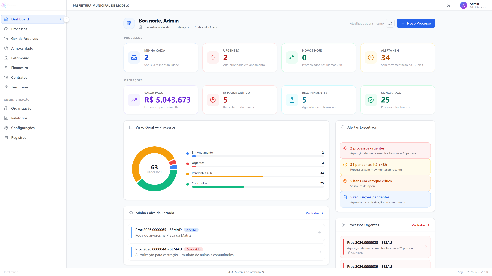
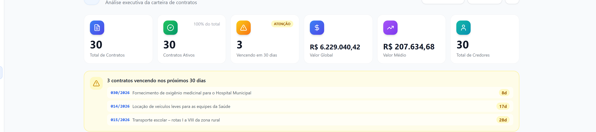
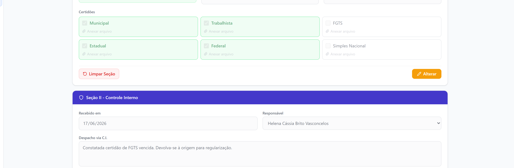
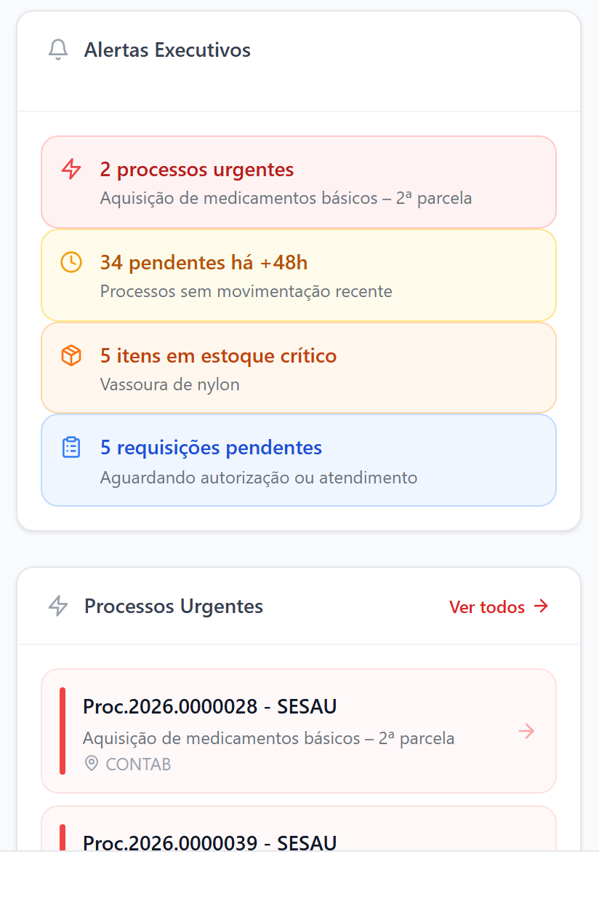
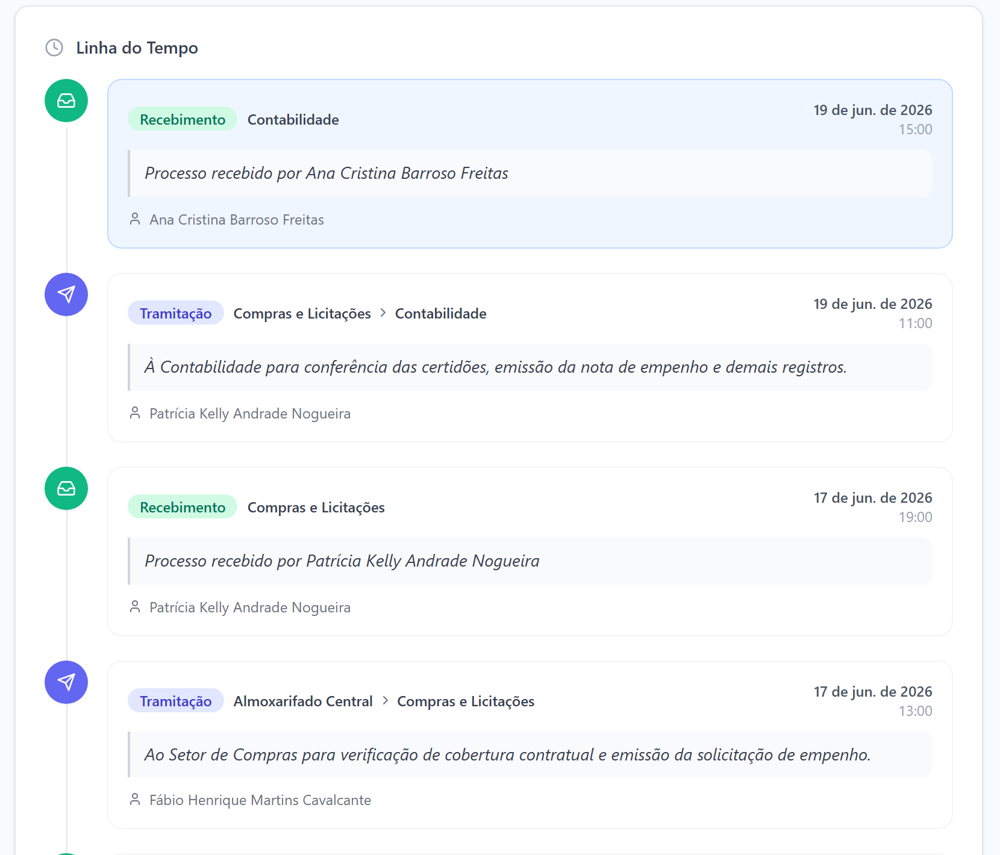
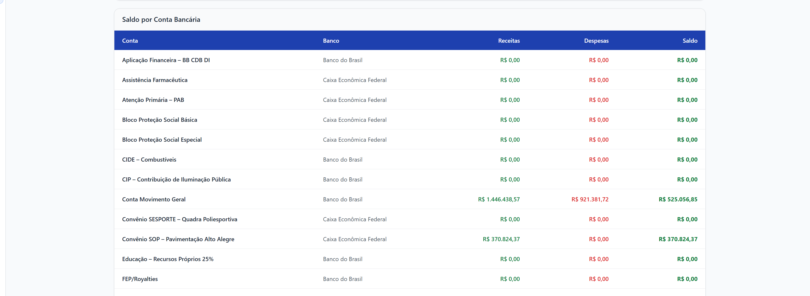
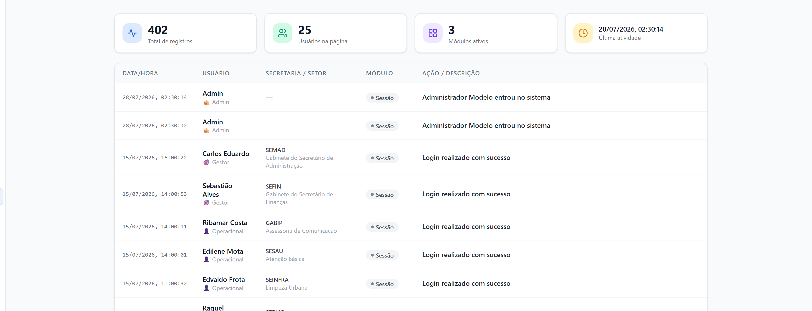

Gestão de processos, contratos e execução da despesa
para a Prefeitura Municipal de Itapajé
Do protocolo do processo até o dinheiro sair da conta.



O senhor vê isso ao abrir o sistema. Não precisa pedir.

Se ela faltar, a prefeitura não para.


| Hoje | Com o jProcesso |
|---|---|
| Ela leva a pasta na mão até a Contabilidade e volta com o carimbo. | Ela despacha na tela; o processo chega lá no mesmo minuto. |
| Para saber onde está o processo, ela liga para três setores. | Ela abre a tela e vê o setor, a pessoa e a hora. |
| A certidão do fornecedor está numa pasta, e às vezes some. | A certidão fica anexada ao processo, junto com a nota. |
| O relatório para a Câmara leva dias sendo montado no Excel. | Sai em PDF e planilha, em um clique. |
| Quando ela sai de férias, ninguém sabe onde as coisas estão. | Quem tem permissão abre e continua de onde parou. |

Levamos o sistema já com a estrutura de secretarias de Itapajé e percorremos o caminho de um processo real, do protocolo ao pagamento.
Entradas por empenho, saídas, requisição por setor com autorização, cota mensal por secretaria, inventário e alerta de estoque mínimo.
Tombamento, grupos e depreciação na classificação do TCE-CE, transferência entre setores, responsável por bem e inventário.
Ofício, portaria, decreto, comunicado e determinação — em PDF, com o brasão e o timbre do município.
O cidadão acompanha o processo pelo número, sem cadastro, com QR Code. CPF, e-mail e telefone nunca aparecem.
Por módulo e por ação: ver, criar, editar, excluir, aprovar. Dá para liberar consulta e negar aprovação para a mesma pessoa.
Logo, brasão e cores da prefeitura na tela e em tudo que é impresso.
A qualquer momento, e ao fim do contrato, o município leva seus dados em formato aberto, sem custo. Isso fica escrito no contrato — não é promessa de vendedor.
Cada ação relevante fica registrada com usuário, módulo, data, hora e computador de origem. O servidor comum não apaga esse registro.
Dizemos antes de o senhor perguntar. É o que separa fornecedor de vendedor.